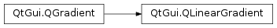

QLinearGradient¶
Synopsis¶
Functions¶
- def
finalStop() - def
setFinalStop(stop) - def
setFinalStop(x, y) - def
setStart(start) - def
setStart(x, y) - def
start()
Detailed Description¶
The
PySide2.QtGui.QLinearGradientclass is used in combination withPySide2.QtGui.QBrushto specify a linear gradient brush.Linear gradients interpolate colors between start and end points. Outside these points the gradient is either padded, reflected or repeated depending on the currently set
spreadmethod:
PadSpread(default)ReflectSpreadRepeatSpreadThe colors in a gradient is defined using stop points of the
QGradientStoptype, i.e. a position and a color. Use theQGradient.setColorAt()or theQGradient.setStops()function to define the stop points. It is the gradient’s complete set of stop points that describes how the gradient area should be filled. If no stop points have been specified, a gradient of black at 0 to white at 1 is used.In addition to the functions inherited from
PySide2.QtGui.QGradient, thePySide2.QtGui.QLinearGradientclass provides thePySide2.QtGui.QLinearGradient.finalStop()function which returns the final stop point of the gradient, and thePySide2.QtGui.QLinearGradient.start()function returning the start point of the gradient.


-
class
PySide2.QtGui.QLinearGradient¶ -
class
PySide2.QtGui.QLinearGradient(QLinearGradient) -
class
PySide2.QtGui.QLinearGradient(start, finalStop) -
class
PySide2.QtGui.QLinearGradient(xStart, yStart, xFinalStop, yFinalStop) Parameters: - yFinalStop –
PySide2.QtCore.qreal - QLinearGradient –
PySide2.QtGui.QLinearGradient - start –
PySide2.QtCore.QPointF - finalStop –
PySide2.QtCore.QPointF - yStart –
PySide2.QtCore.qreal - xStart –
PySide2.QtCore.qreal - xFinalStop –
PySide2.QtCore.qreal
Constructs a default linear gradient with interpolation area between (0, 0) and (1, 1).
See also
QGradient.setColorAt()PySide2.QtGui.QLinearGradient.setStart()PySide2.QtGui.QLinearGradient.setFinalStop()Constructs a linear gradient with interpolation area between the given
startpoint andfinalStop.Note
The expected parameter values are in pixels.
Constructs a linear gradient with interpolation area between (
x1,y1) and (x2,y2).Note
The expected parameter values are in pixels.
- yFinalStop –
-
PySide2.QtGui.QLinearGradient.finalStop()¶ Return type: PySide2.QtCore.QPointFReturns the final stop point of this linear gradient in logical coordinates.
-
PySide2.QtGui.QLinearGradient.setFinalStop(stop)¶ Parameters: stop – PySide2.QtCore.QPointFSets the final stop point of this linear gradient in logical coordinates to
stop.
-
PySide2.QtGui.QLinearGradient.setFinalStop(x, y) Parameters: - x –
PySide2.QtCore.qreal - y –
PySide2.QtCore.qreal
This is an overloaded function.
Sets the final stop point of this linear gradient in logical coordinates to
x,y.- x –
-
PySide2.QtGui.QLinearGradient.setStart(x, y)¶ Parameters: - x –
PySide2.QtCore.qreal - y –
PySide2.QtCore.qreal
This is an overloaded function.
Sets the start point of this linear gradient in logical coordinates to
x,y.- x –
-
PySide2.QtGui.QLinearGradient.setStart(start) Parameters: start – PySide2.QtCore.QPointFSets the start point of this linear gradient in logical coordinates to
start.
-
PySide2.QtGui.QLinearGradient.start()¶ Return type: PySide2.QtCore.QPointFReturns the start point of this linear gradient in logical coordinates.
© 2018 The Qt Company Ltd. Documentation contributions included herein are the copyrights of their respective owners. The documentation provided herein is licensed under the terms of the GNU Free Documentation License version 1.3 as published by the Free Software Foundation. Qt and respective logos are trademarks of The Qt Company Ltd. in Finland and/or other countries worldwide. All other trademarks are property of their respective owners.